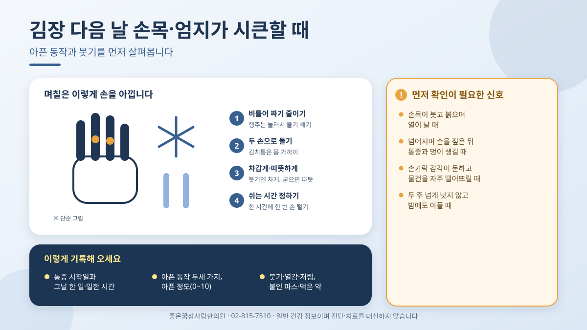
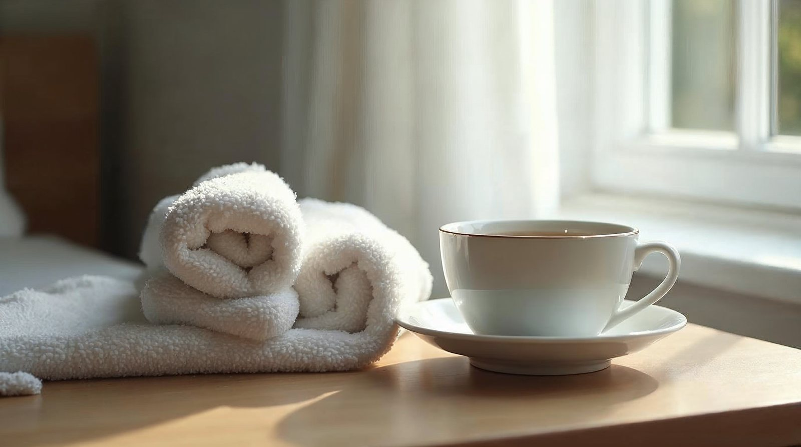

김장 다음 날 손목과 엄지 쪽이 시큰한 것은 배추를 쥐고 비트는 동작을 오래 반복한 뒤 흔히 겪는 일이라, 아픈 동작과 붓기를 먼저 묻고 며칠 손을 덜 쓰는 요령부터 함께 정리합니다.
여쭙는 것
- 시큰한 곳이 엄지 쪽인가요, 새끼손가락 쪽인가요, 손목 한가운데인가요?
- 행주 짜기, 병뚜껑 열기, 냄비 들기 중 어떤 동작이 가장 불편한가요?
- 붓거나 열감이 있나요? 아침에 더 뻣뻣한가요?
생활에서 해 볼 것
- 이삼 일은 걸레와 행주를 비틀어 짜는 일을 줄이고 눌러서 물기 빼기
- 무거운 김치통은 두 손으로 몸 가까이 붙여 들거나 나눠 담기
- 김치통을 나눠 드릴 때는 바퀴 달린 장바구니나 수레를 쓰고, 상도동처럼 언덕길이 많…
한의원에서 함께 살필 것
- 김장이나 명절 준비 뒤마다 손목 통증이 반복되는 경우 아픈 지점과 불편한 동작을 함…
- 팔꿈치와 어깨까지 뻐근함이 이어지는 경우 팔 전체의 긴장을 함께 살핍니다.
- 손이 차고 저린 느낌이 함께 있는 경우 잠과 손의 온기도 이어서 여쭙니다.
먼저 확인이 필요한 신호
- 손목이 눈에 띄게 붓고 붉어지며 열이 나는 경우
- 넘어지며 손을 짚은 뒤 통증과 멍이 생긴 경우
- 손가락 감각이 둔해지고 물건을 자주 떨어뜨리는 경우

김장 다음 날 손목과 엄지 쪽이 시큰하다면 먼저 며칠은 쥐고 비트는 일을 줄이고, 어떤 동작에서 아픈지 살펴보는 것이 좋습니다. 절인 배추를 들어 옮기고 속을 버무리며 꼭 짜는 일은 평소 잘 쓰지 않던 힘을 하루에 몰아 쓰게 합니다. 상도동 골목에서도 김장철이면 병뚜껑을 열거나 행주를 짤 때 손목이 찌릿하다는 이야기를 자주 듣습니다. 손을 덜 쓰면서 사나흘 사이 시큰함이 조금씩 줄어드는지 보는 것이 첫 기준이고, 붓기가 뚜렷하거나 손가락이 저리다면 지켜보기보다 확인을 먼저 권합니다.

왜 이런 불편이 생길 수 있나요
- 무거운 배추를 한 손으로 쥐고 드는 동작이 반복되면 손목과 엄지 쪽 힘줄에 부담이 몰릴 수 있습니다.
- 물기를 짜며 손목을 비트는 동작이 평소보다 훨씬 많아집니다.
- 엄지를 벌린 채 배추 잎 사이에 속을 넣는 동작은 엄지 아래쪽 손목에 힘이 계속 실리게 합니다.
- 찬물과 찬 바닥에서 오래 일하면 손과 팔 근육이 굳기 쉽고, 고무장갑 안에 땀이 찼다 식기를 반복하면 손이 더 뻣뻣하게 느껴질 수 있습니다.
- 쉬는 시간 없이 한 번에 몰아서 하고, 김장 뒤에도 김치통 정리와 연말 설거지가 이어지면 피로가 풀릴 틈이 없습니다.
- 한의학에서는 손목의 불편과 함께 몸 전체가 지쳐 있는지, 손발이 찬 편인지도 함께 살핍니다.
먼저 이렇게 여쭙니다
- 시큰한 곳이 엄지 쪽인가요, 새끼손가락 쪽인가요, 손목 한가운데인가요?
- 행주 짜기, 병뚜껑 열기, 냄비 들기 중 어떤 동작이 가장 불편한가요?
- 붓거나 열감이 있나요? 아침에 더 뻣뻣한가요?
- 손가락이 저리거나 밤에 손이 저려 깬 적이 있나요?
- 김장 뒤에도 무거운 통을 옮기는 일이 이어졌나요?
- 평소 육아, 요리, 키보드나 휴대폰 사용처럼 손목을 많이 쓰는 일이 있나요?

일상에서 먼저 해 볼 수 있는 것
- 이삼 일은 걸레와 행주를 비틀어 짜는 일을 줄이고 눌러서 물기 빼기
- 무거운 김치통은 두 손으로 몸 가까이 붙여 들거나 나눠 담기
- 김치통을 나눠 드릴 때는 바퀴 달린 장바구니나 수레를 쓰고, 상도동처럼 언덕길이 많은 동네에서는 한 번에 많이 들고 오르내리지 않기
- 병뚜껑은 고무 패드나 마른 행주를 대고 손바닥 전체로 돌리기
- 휴대폰은 탁자에 두거나 두 손으로 나눠 쓰고, 엄지로만 오래 누르지 않기
- 붓고 열감이 있으면 잠깐 차갑게, 굳은 느낌이면 따뜻하게 하기
- 손목을 꺾지 않고 가볍게 쥐었다 펴기를 틈틈이 하기
- 다음 김장 때는 한 시간에 한 번 손을 털고 쉬는 시간 정하기
상황별 예시
- 예를 들어 어르신이 며칠에 걸쳐 많은 양을 혼자 절이고 버무린 경우, 엄지 쪽 손목이 붓고 행주를 짤 때마다 찌릿할 수 있습니다. 이때는 남은 뒷정리를 가족과 나누고 사나흘 손을 덜 쓰면서 시큰함이 줄어드는지 먼저 봅니다.
- 예를 들어 아기를 안고 지내는 육아 중인 분이 친정 김장까지 도운 경우, 아기를 받쳐 드는 동작과 김장 동작이 겹쳐 엄지 쪽 부담이 쌓이기 쉽습니다. 아기를 들 때 손목을 꺾지 말고 팔 전체로 받치는 자세를 함께 연습해 볼 수 있습니다.
- 예를 들어 평일에는 키보드와 마우스를 오래 쓰는 직장인이 주말에 김장을 한 경우, 월요일 출근 뒤 마우스를 쥘 때 불편이 이어질 수 있습니다. 며칠은 마우스를 몸 가까이 두고 손목 아래를 받쳐 쓰는 것부터 바꿔 봅니다.
스스로 점검해 보세요
- 시큰한 자리가 엄지 쪽인지 손목 가운데인지 손가락으로 짚어 보았다.
- 행주 짜기, 병뚜껑 열기, 휴대폰 쥐기 가운데 아픈 동작을 골라 두었다.
- 아픈 쪽 손목이 반대쪽보다 부어 보이거나 뜨거운지 비교해 보았다.
- 손가락 끝이 저리거나 밤에 손이 저려 깬 적이 있는지 떠올려 보았다.
- 손을 덜 쓴 날과 많이 쓴 날의 다음 날 아침을 비교해 보았다.
- 김장 전에도 손목이 불편했던 적이 있는지 돌아보았다.
얼마나 지켜보고 언제 상담할까요
- 손을 덜 쓰면서 사나흘 사이 시큰함이 조금씩 줄어든다면 생활 관리를 이어 가며 지켜볼 수 있습니다.
- 일주일이 지나도 같은 동작에서 아픔이 그대로이거나, 집안일을 다시 시작하자마자 도진다면 진료에서 아픈 자리를 확인해 보시길 권합니다.
- 두 주가 넘어도 줄지 않거나 밤에도 욱신거린다면 더 미루지 않습니다.
- 넘어지며 손을 짚은 뒤 붓고 멍이 들었다면 며칠 지켜보지 말고 바로 영상 검사가 가능한 의료기관에서 확인합니다.
한의원에서 함께 살필 수 있는 경우
- 김장이나 명절 준비 뒤마다 손목 통증이 반복되는 경우 아픈 지점과 불편한 동작을 함께 살핍니다.
- 팔꿈치와 어깨까지 뻐근함이 이어지는 경우 팔 전체의 긴장을 함께 살핍니다.
- 손이 차고 저린 느낌이 함께 있는 경우 잠과 손의 온기도 이어서 여쭙니다.
좋은꿈참사랑한의원에서는 첫 방문 때 김장을 언제, 얼마나, 어떤 일을 맡아 하셨는지부터 여쭙고, 맥부터 짚어 그날 몸의 피로와 손발의 찬 정도를 살핍니다. 그다음 손목과 엄지 주변을 눌러 아픈 자리와 붓기를 확인하고, 필요하다고 판단될 때 초음파로 힘줄 주변을 함께 봅니다. 상태에 맞춰 침·약침·추나 등을 정하고, 귀가 전에는 손 쓰는 방법과 집에서 지켜볼 점, 다음 방문 때 비교할 동작을 알려 드립니다. 다시 오시면 지난번 아팠던 동작이 어떻게 달라졌는지 이어서 여쭙습니다.

이렇게 기록해 오시면 상담이 쉬워집니다
- 통증이 시작된 날과 그날 한 일(배추 포기 수, 일한 시간)
- 아픈 동작 두세 가지와 아픈 정도(0~10)
- 붓기, 열감, 저림이 있었는지와 시간대
- 따뜻하게 했을 때와 차갑게 했을 때 어느 쪽이 편했는지
- 평소 손을 많이 쓰는 일(육아, 키보드, 요리 등)
- 붙인 파스나 먹은 진통제 이름
이런 증상은 먼저 확인이 필요합니다
- 손목이 눈에 띄게 붓고 붉어지며 열이 나는 경우
- 넘어지며 손을 짚은 뒤 통증과 멍이 생긴 경우
- 손가락 감각이 둔해지고 물건을 자주 떨어뜨리는 경우
- 두 주 넘게 나아지지 않고 밤에도 아픈 경우
복용 중인 진통제나 다른 약은 처방한 의사와 상의 없이 줄이거나 끊지 않습니다. 다친 뒤 시작된 심한 통증과 붓기는 영상 검사가 가능한 의료기관 확인이 먼저이며, 급하면 응급실을 이용하세요.
함께 읽으면 좋은 글
- 김장 뒷정리와 찬물 설거지가 이어진 뒤 아침마다 손가락 마디가 뻣뻣할 때는 어떻게 살피나요?
- 김장 때 바닥에 쪼그려 앉아 일한 뒤 허리와 무릎이 아프면 어떻게 살피나요?
- 파스는 얼마나 붙이고, 찜질은 따뜻하게 해야 하나요 차갑게 해야 하나요?
한눈에 보는 표
| 구분 | 핵심 |
|---|---|
| 여쭙는 것 | 시큰한 곳이 엄지 쪽인가요, 새끼손가락 쪽인가요, 손목 한가운데인가요? 행주 짜기, 병뚜껑 열기, 냄비 들기 중 어떤 동작이 가장 불편한가요? |
| 생활에서 해 볼 것 | 이삼 일은 걸레와 행주를 비틀어 짜는 일을 줄이고 눌러서 물기 빼기 무거운 김치통은 두 손으로 몸 가까이 붙여 들거나 나눠 담기 |
| 한의원에서 함께 살필 것 | 김장이나 명절 준비 뒤마다 손목 통증이 반복되는 경우 아픈 지점과 불편한 동작을 함께 살핍니다. 팔꿈치와 어깨까지 뻐근함이 이어지는 경우 팔 전체의 긴장을 함께 살핍니다. |
| 먼저 확인이 필요한 신호 | 손목이 눈에 띄게 붓고 붉어지며 열이 나는 경우 넘어지며 손을 짚은 뒤 통증과 멍이 생긴 경우 |
자주 묻는 질문
보호대를 차고 있어도 되나요?
무거운 것을 드는 동안에는 도움이 될 수 있지만 하루 종일 꽉 조이는 것은 피하시길 권합니다. 어떤 보호대가 맞는지는 아픈 자리를 보고 함께 이야기합니다.
파스만 붙여도 괜찮을까요?
가벼운 뻐근함은 며칠 쉬면서 지켜볼 수 있습니다. 붓기나 저림이 있거나 한두 주 넘게 이어지면 진료에서 확인하는 것을 권합니다.
손목이 아픈데 왜 맥을 짚나요?
김장 뒤에는 손목만이 아니라 몸 전체가 지쳐 있는 경우가 많아, 그날의 피로와 잠 상태를 함께 살피기 위해서입니다. 맥만으로 판단하지 않고 손목 진찰과 함께 봅니다.
김장을 또 해야 하는데 어떻게 준비하나요?
양을 이틀로 나누고, 물기 짜는 일은 채반에 올려 눌러 빼는 방식으로 바꿔 보세요. 손목이 불편한 날은 무리해서 이어 하지 않는 것이 좋습니다.
이 글은 일반적인 건강 정보이며 개인의 진단이나 치료를 대신하지 않습니다. 증상이 있거나 복용 중인 약이 있다면 진료를 통해 확인하세요. 치료 효과는 개인마다 다를 수 있습니다.
작성 기준: 일반적으로 알려져 있는 건강 정보를 참고해 정리했습니다(대표원장 감수). 증상 기록은 1~2주 동안 하루 1회, 비슷한 시간에 적어 오시면 지난 상태와 비교하기 쉽습니다.
좋은꿈참사랑한의원은 재진 때 지난번 이야기부터 이어서 여쭙니다. 진료시간과 예약은 오시는 길에서 확인하세요.
어디서 상담받을 수 있나요?
좋은꿈참사랑한의원은 서울 동작구 만양로2길 2 신성빌딩 3층·5층(서울 동작구 상도동, 7호선 상도역 3번 출구 근처)에 있습니다. 한의사 3명(이종호 대표원장, 조영기 수석진료원장, 정원영 진료원장)이 진료합니다. 진료시간은 평일 09:30~20:00(점심 13:00~14:00), 토·일·공휴일 09:30~15:00이며, 방문 전 전화로 확인을 권합니다. 예약은 네이버 예약, 카카오톡 상담, 전화 02-815-7510로 받습니다.